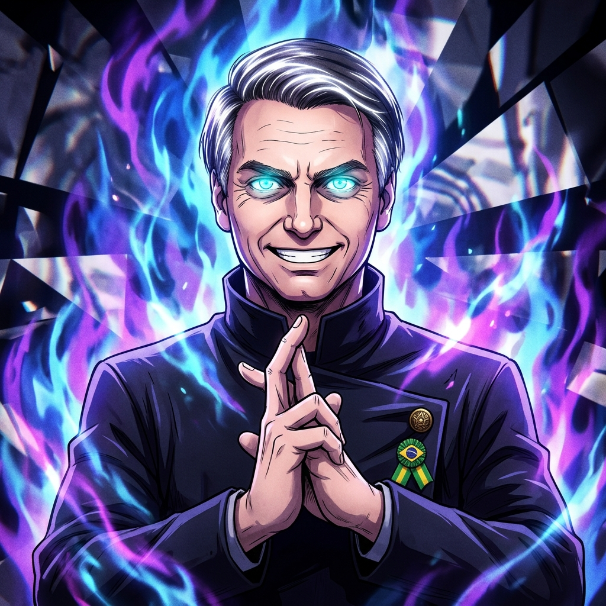
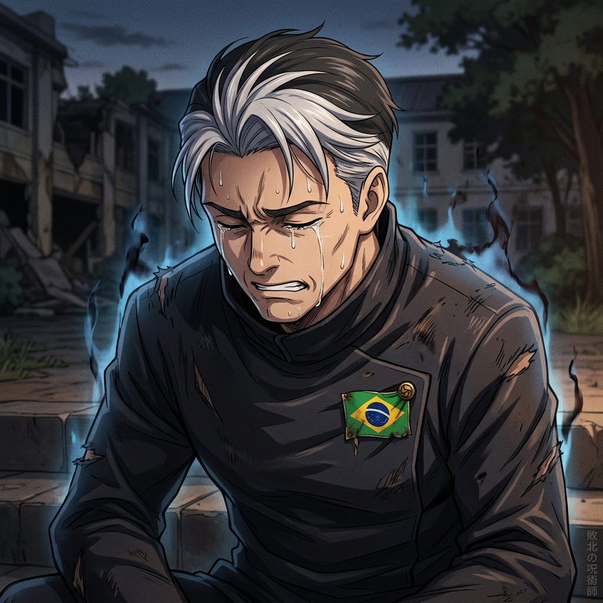

Muryokusho: Vazio Infinito
😁⚡ Confiante & Sorrindo


Flávio "Gojo"
Vazio Infinito (Azul/Roxo)
FLÁVIO "GOJO" BOLSONARO
PL • Clã Gojo do Vazio Infinito
50,80%
60.224.595
Votos Válidos Computados
Nível de Força & Energia Amaldiçoada
53% PODER